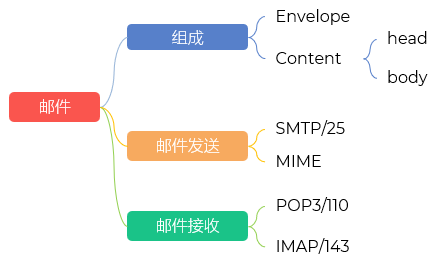
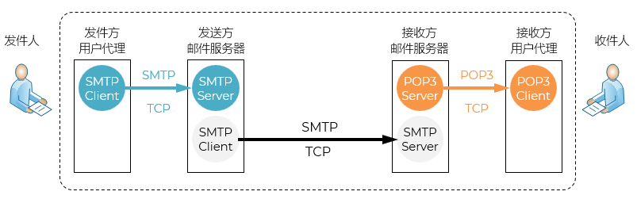
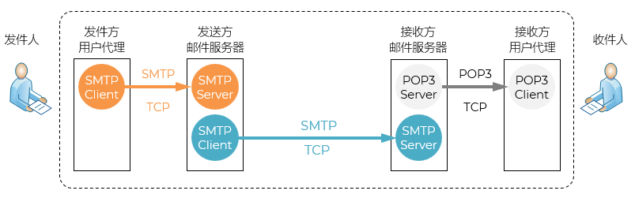
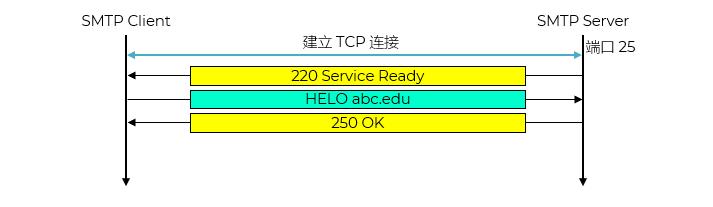
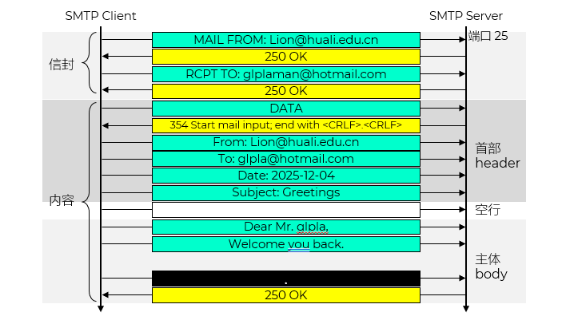
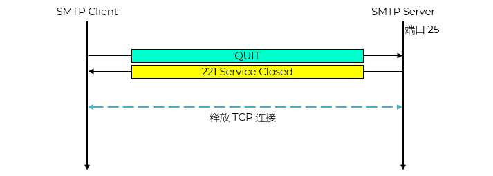
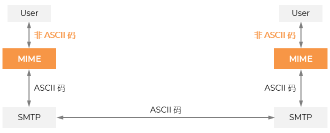
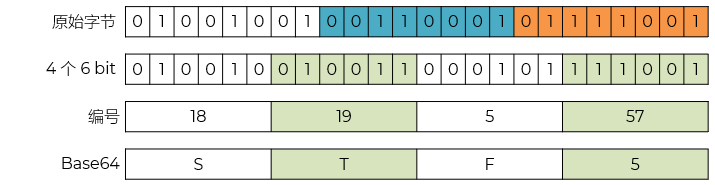
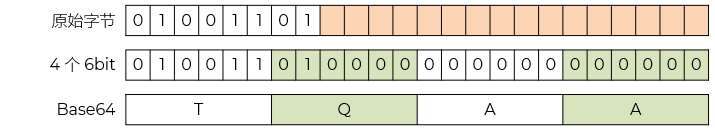
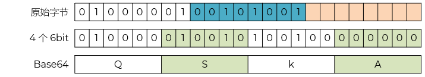

1942194789@qq.com
glpla@hotmail.com
撰写
显示
处理
通信
发送和接收邮件
能够同时充当客户和服务器
向发信人报告邮件传送情况

不支持非英文字符，如中文
邮件发送
发送方邮件服务器使用端口 25
邮件中继
接收方邮件服务器使用端口 25

发送主机的 SMTP 客户和接收主机的 SMTP 服务器之间建立
不使用中间的邮件服务器 - 教学简化模型或理想化场景
但是仍然需要中间的站点即邮件传输代理 MTA（Mail Transfer Agent）转发

RFC 5322 只规定了邮件内容中的首部 header 格式
邮件的主体 body 部分则让用户自由撰写
MAIL FROM: - 指定发件人
RCPT TO: - 指定收件人
服务器返回 250 OK 表示接受
DATA - 告诉服务器接下来是邮件内容
服务器回复 354 Start mail input... 表示可以开始输入
内容以 <CRLF>.<CRLF> 结束（即空行后跟一个点）


客户端连接 POP3 服务器（端口 110）
认证（用户名/密码）
列出邮件列表（LIST 命令）
下载邮件（RETR 命令）
标记为删除（DELE），退出时真正删除（QUIT）
无法多设备同步：在手机上读了邮件，电脑上看不到“已读”状态
容易丢失邮件：如果本地设备损坏且服务器已删邮件，数据无法恢复
功能单一：不能远程管理文件夹、搜索服务器内容等
客户端连接 IMAP 服务器（端口 143 或 993）
身份验证（用户名/密码）
获取邮箱列表（如收件箱、发件箱、草稿等）
同步邮件状态（未读/已读、星标、移动等）
实时操作（读、删、移、搜索、过滤）都会反映在服务器上
支持文件夹层级管理和邮件分类
要想查阅邮件，必须先联网
占用服务器存储空间
对服务器性能要求高
POP3：适合只想下载邮件并离线阅读的用户，但缺乏同步能力
IMAP：适合需要多设备同步、远程管理、实时更新的现代用户，是当前主流选择
非 ASCII 字符（如中文、阿拉伯文等）
附件（如图片、音频、视频、PDF 等二进制文件）
多部分消息体（例如：一封邮件同时包含纯文本和 HTML 版本）

MIME-Version：表明该邮件符合 MIME 标准（通常为 1.0）
Content-Type：指定主体（body）的数据类型（如 text/plain、image/jpeg、multipart/mixed）
Content-Transfer-Encoding：说明主体如何被编码以通过邮件系统安全传输（如 base64、quoted-printable）
Content-ID：为内容部分分配唯一标识符（常用于 HTML 邮件中引用内嵌图片）
Content-Description：对内容进行可读性描述（可选）
| item | desc |
|---|---|
| text | 文本类；子类型有 /plain /html /css /xml /csv；通常需要指定编码，如 charset=utf-8 |
| image | 图像类；子类型有 /jpeg /png /gif /webp /svg+ |
| application | 应用类；子类型有 /json /javascript /xml /msword /octet-stream |
| multipart | 混合类；子类型有 /form-data |
| audio | 音频类 |
| video | 视频类 |
multipart/mixed：混合内容（正文+附件）
multipart/alternative：同一内容的不同格式（如 text 和 HTML）
multipart/related：主文档与关联资源（如 HTML + 内嵌图片）
Base64：将任意二进制数据转换为 ASCII 字符，适合图片、PDF 等
Quoted-Printable：仅对非 ASCII 或特殊字符编码，适合含少量非英文字符的文本
| item | desc |
|---|---|
| 7bit | 7 位 ASCII 编码，每行不能超过 1000 个字符（包括回车和换行） 默认编码方法 |
| 8bit | 8 位非 ASCII 编码，每行不能超过 1000 个字节（包括回车和换行） |
| Binary | 8 位非 ASCII 编码，任意长度的字节串 |
| Base64 | 将任意长度的字节串转换为用 7 位 ASCII 编码表示的字符串 可用于二进制和非文本数据的编码 |
| Quoted-printable | 将任意长度的字节串转换为 ASCII 编码表示的字符串 可用于二进制和非文本数据的编码 |
控制字符（0–31，127）
可打印字符（32–126）
| 字符 Character | 二进制 Binary | 十进制 Decimal | 十六进制 Hexadecimal | 类型 Type |
|---|---|---|---|---|
| 9 | 00111001 | 57 | 0x39 | 可打印 |
所有可打印的ASCII码，除 = 外，都不改变
其它：= + 每个字节对应的两个大写的十六进制
| 原始字节 | 10011101 |
|---|---|
| 十进制 | 157 |
| 十六进制 | 0x9D |
| Quoted-Printable | =9D |
把二进制代码划分成一个个的 24bit 的单元
每个单元划分成 4 个 6bit 组
每个 6bit 可以表示64值
用两个连在一起的二个等号“==”和一个等号“=”分别表示最后一组的代码只有 8 位或 16 位
回车和换行忽略
26个大小字母：A-Z
26个小写字母：a-z
数字：0-9
+：62
/：63
| 索引 | 对应字符 | 索引 | 对应字符 | 索引 | 对应字符 | 索引 | 对应字符 |
|---|---|---|---|---|---|---|---|
| 0 | A | 26 | a | 52 | 0 | 62 | + |
| 1 | B | 27 | b | 53 | 1 | 63 | / |
| 2 | C | 28 | c | 54 | 2 | ||
| ... | ... | ... | ... | 55 | 3 | ||
| ... | ... | ... | ... | 56 | 4 | ||
| ... | ... | ... | ... | 57 | 5 | ||
| ... | ... | ... | ... | 58 | 6 | ||
| 24 | X | 48 | x | 59 | 7 | ||
| 25 | Y | 49 | y | 60 | 8 | ||
| 25 | Z | 51 | z | 61 | 9 |


